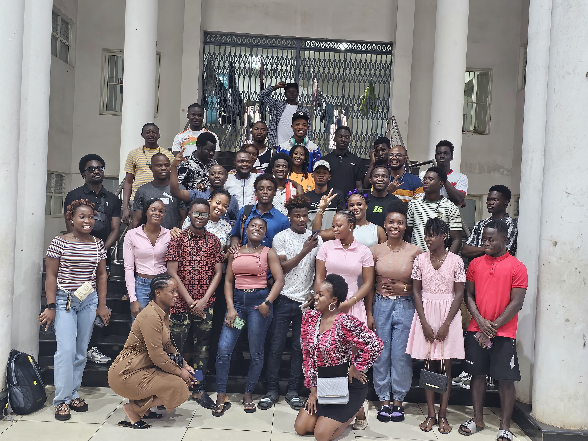
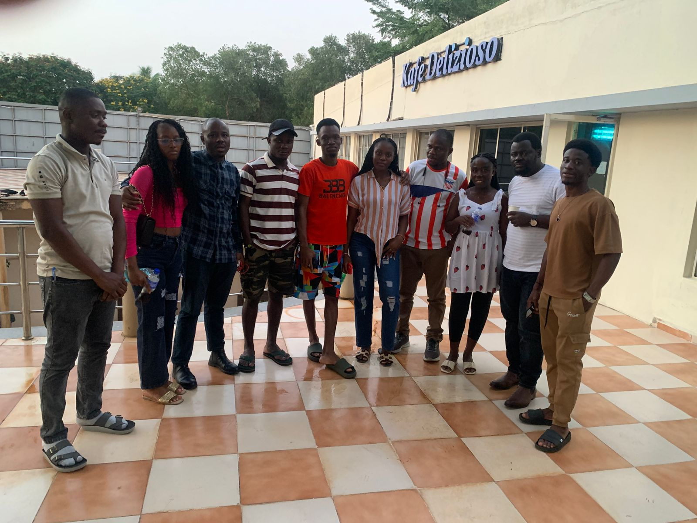
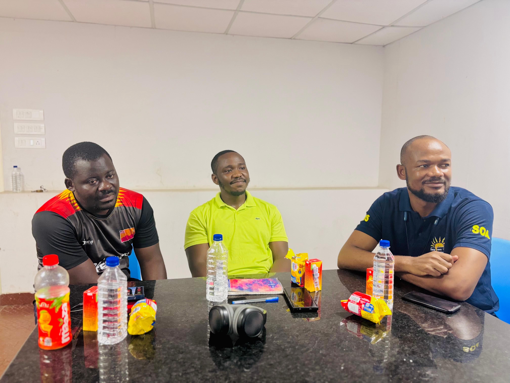
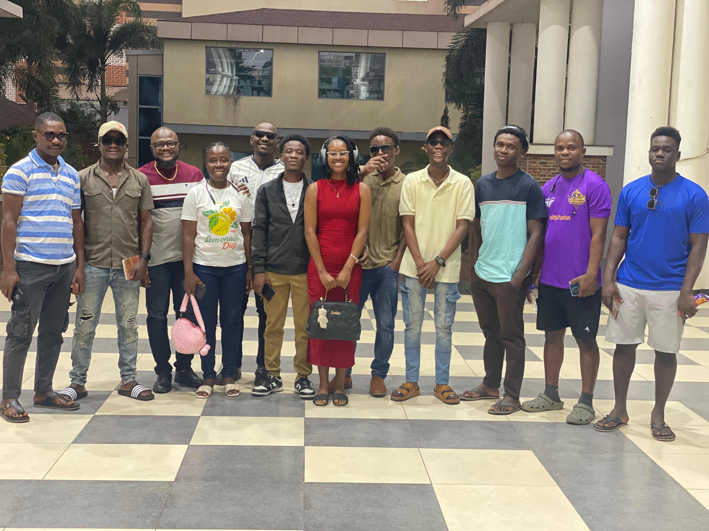
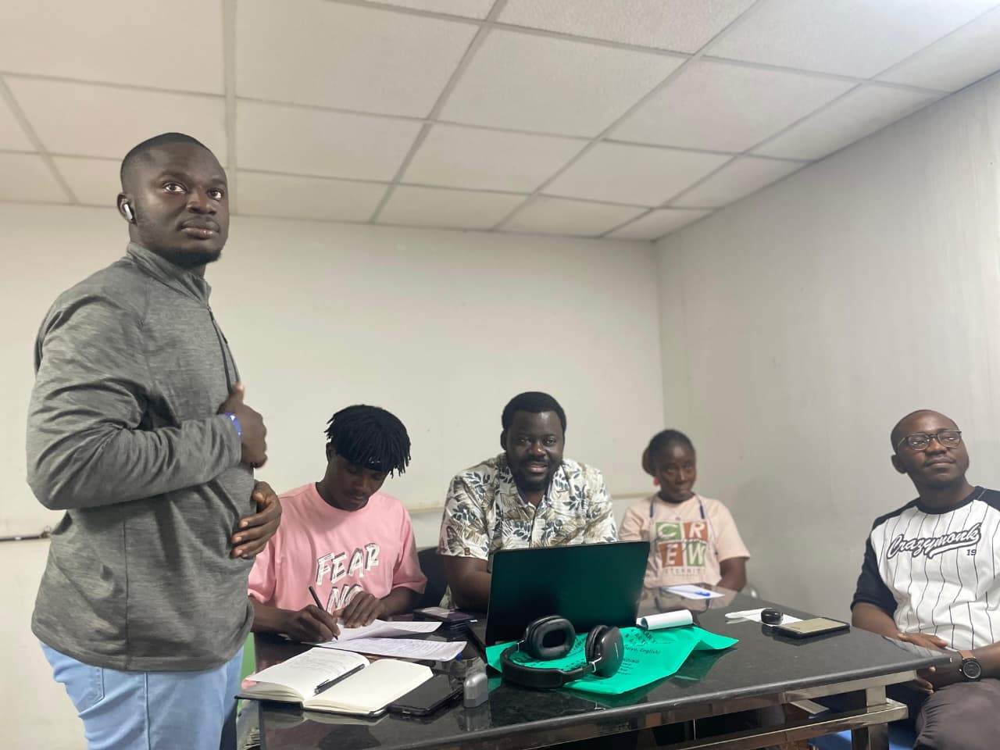
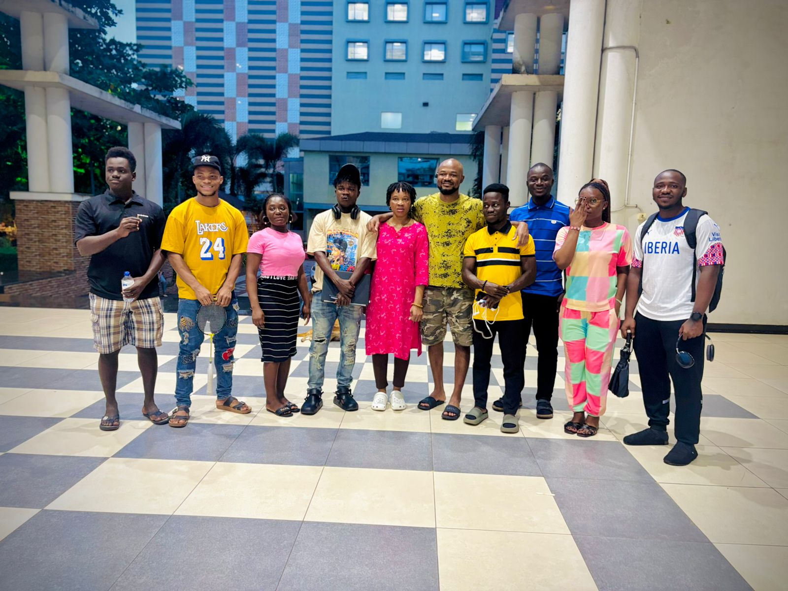
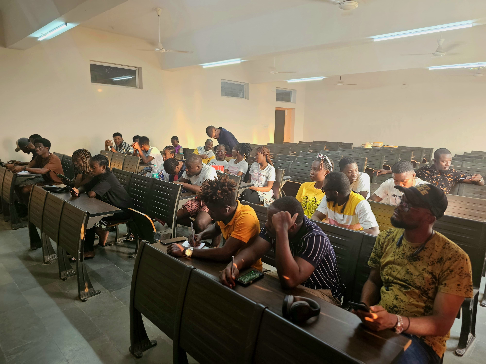
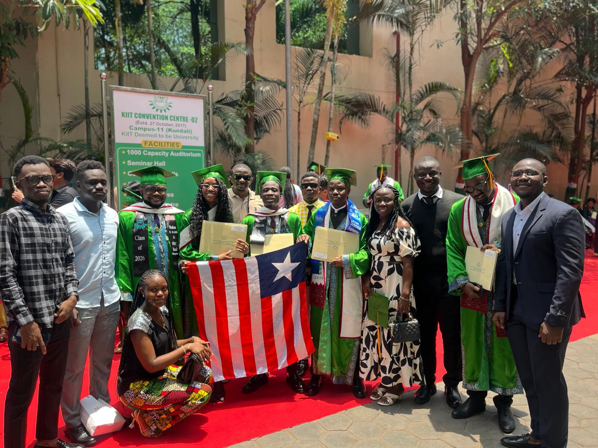

Our History
A story of students, solidarity, and service.
The story of the Liberian Student Union in Odisha is one of resilience, unity, and service. It is a story that reminds every Liberians student studying abroad that success is not only measured by academic achievement, but also by the strength of community and the impact of service to others.





Where it began
Building a home away from home
As Liberian students arrived at universities across Odisha, they brought different courses, campuses, and experiences—but shared the same hopes for education and a brighter future. The Union grew as a place to meet, support one another, celebrate Liberian culture, and face the challenges of student life together.
What began with students reaching out to fellow Liberians became a united community. Through meetings, mentorship, cultural gatherings, and advocacy, LSUO has continued to strengthen the ties between students across Odisha.
Our journey
From connection to community
-
First Independence Day Celebration
This Independence day celebration brings together members of the Liberian Students Union, this celebration further strengthens our community bonds and give us a sense of belongth, during such event we had the opportunity of showcasing our culture and unity as one people.
-
Students come together
Liberian students in Odisha begin building friendships and practical support networks across campuses, having series of meetings which foucus on the growth and development of the institution
LSUO Meeting at KIIT University 
LSUO Meeting at SOA University 
LSUO Meeting at CV Raman University -
A union takes shape in sportmanship
The Union develop a strong soccer team which partcipated in various competitions and friendly matches with other communities displaying unity and sportsmanship.
-
Academy achievement of Union Members
The Union has a strong academic record, with members excelling in their studies and receiving recognition for their achievements. With millions of miles traveled, they have built a legacy of excellence.

Our legacy
Unity remains at the heart of our story.
Every member adds a new chapter: welcoming a newcomer, sharing knowledge, leading with integrity, or celebrating a graduate. Together, these moments form the history of LSUO and guide the Union toward a future of excellence and service.